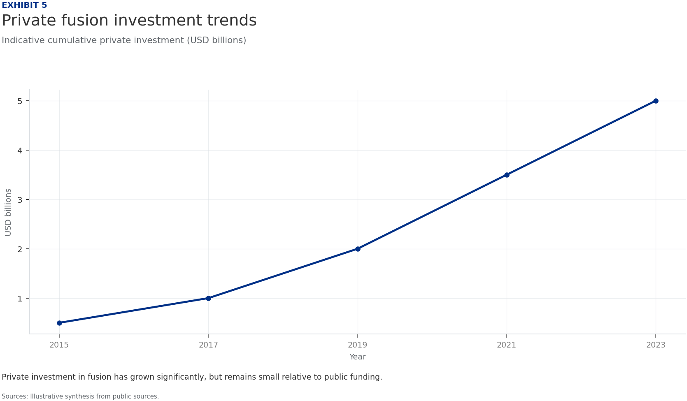
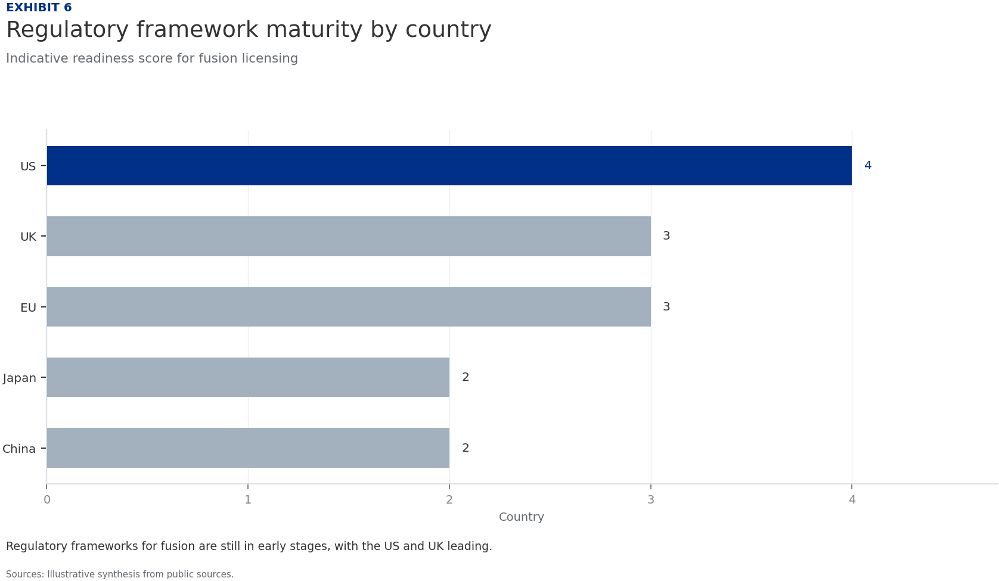
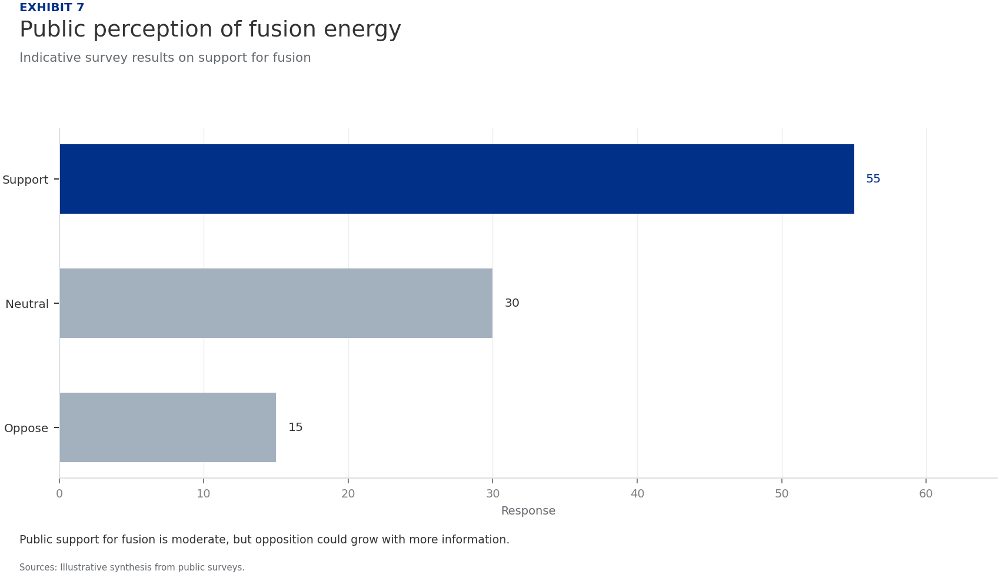
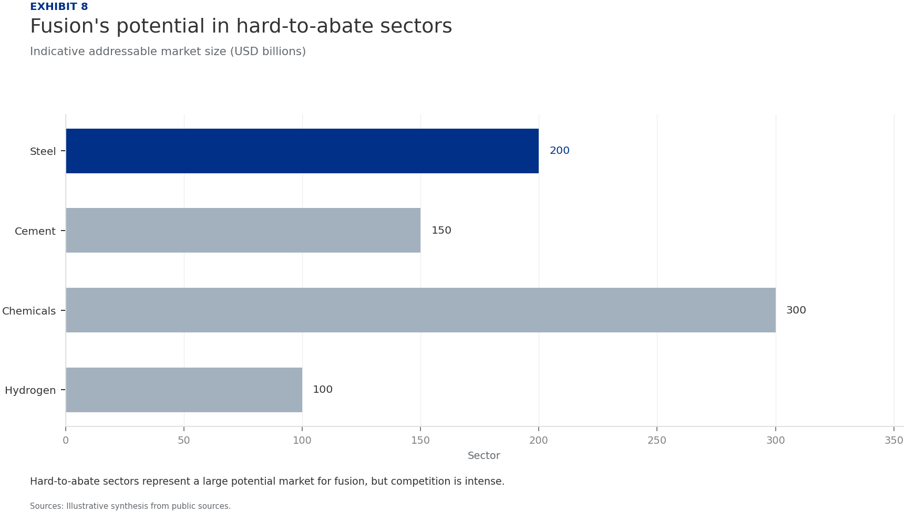
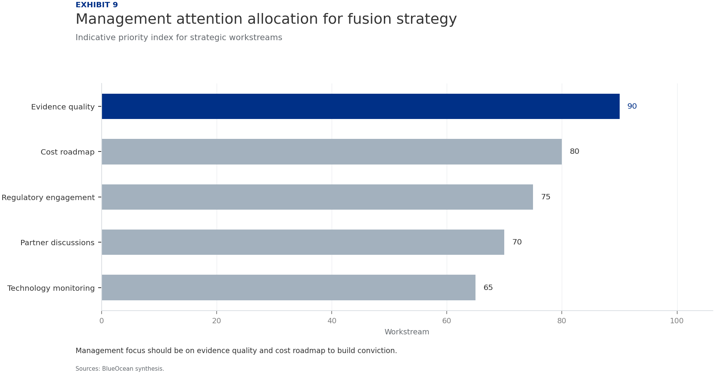
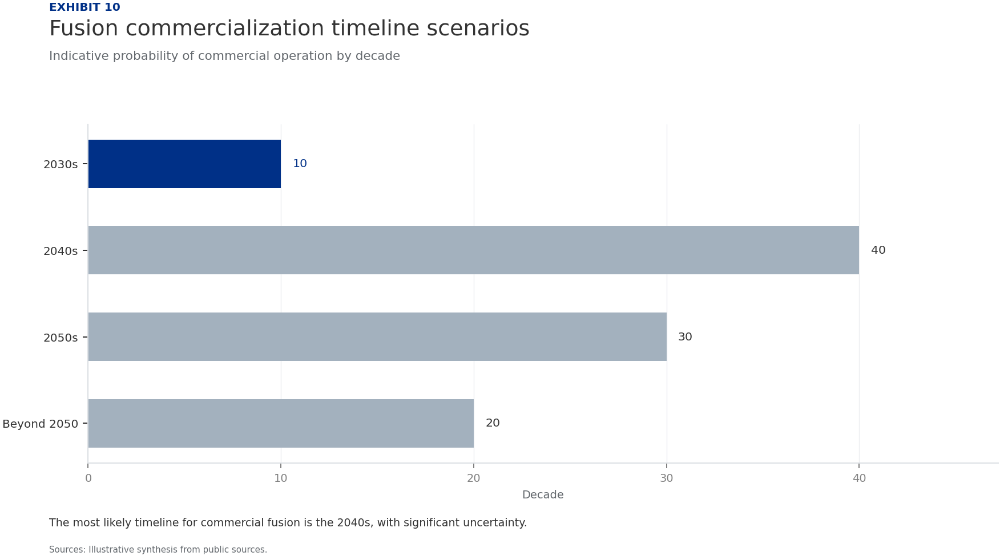
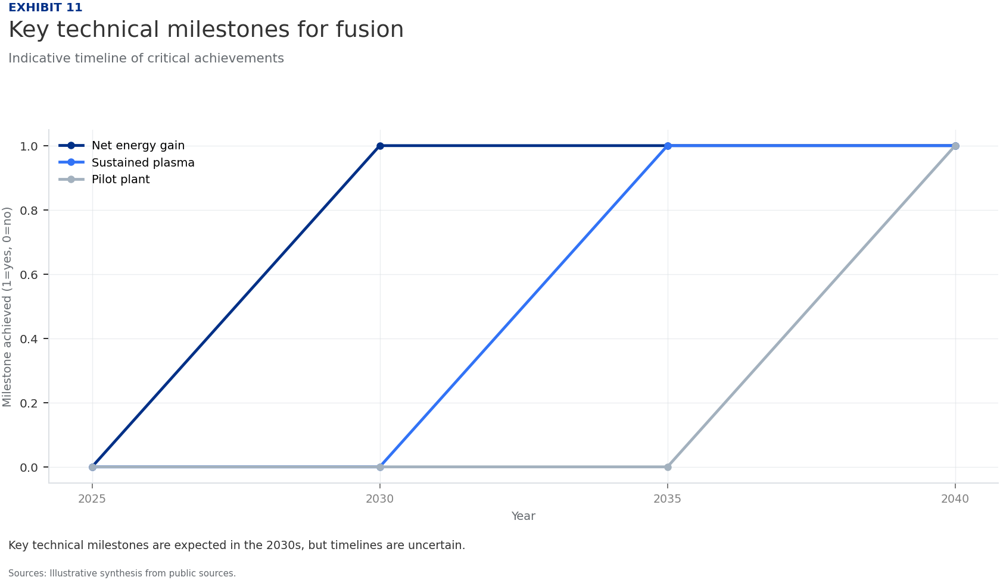
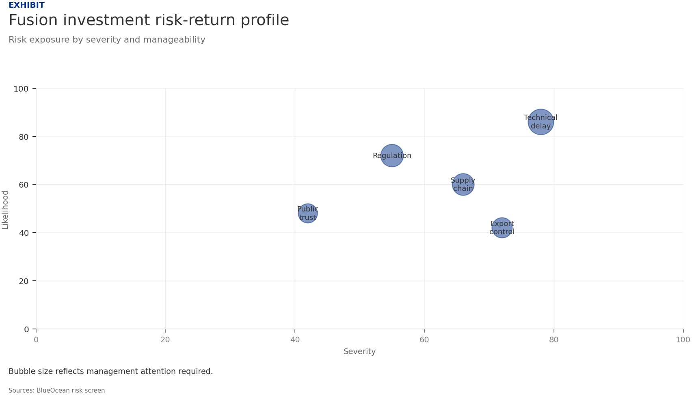

BlueOcean Research
Deep Research Report
Nuclear Fusion Commercialization Outlook and Strategic Implications
Nuclear fusion commercialization outlook and strategic implications
2026-06-03
BlueOcean
Contents
| 03 | Nuclear fusion is approaching technical feasibility |
| 04 | Fusion technology is advancing, but commercial timelines remain uncertain |
| 06 | Economic viability depends on cost, capital, and market conditions |
| 08 | Fusion's strategic role in energy systems is still undefined |
| 10 | Geopolitical dynamics shape fusion investment and collaboration |
| 12 | Investment trends show growing private sector interest, but public funding dominates |
| 14 | Regulatory frameworks for fusion are still evolving |
| 16 | Public acceptance and social license are critical for fusion deployment |
| 17 | Fusion's impact on hard-to-abate sectors is a key strategic opportunity |
| 18 | The next management agenda should focus on evidence quality and staged commitments |
| 19 | About the research |

Opening view
Nuclear fusion is approaching technical feasibility
Nuclear fusion commercialization outlook and strategic implications
The CEO-level conclusion is that nuclear fusion commercialization should be managed as a staged strategic option, not a single binary bet. The available public evidence supports a focused management agenda around commercial proof, cost position, financing readiness, customer adoption, and execution risk. Where source evidence is incomplete, the report preserves the gap as a diligence task rather than converting it into an unsupported forecast. Management should fund near-term validation, protect medium-term options, and reserve larger commitments for decision milestones tied to verified operating, customer, and financial evidence.
What changes for leaders
- Nuclear fusion is approaching technical feasibility
- Current public evidence is insufficient to support high-conviction capital commitments.
- The most credible near-term actions are low-cost validation, partner discussions, and monitoring of key technical and regulatory milestones
- Larger commitments should be reserved for decision milestones tied to verified operating, customer, and financial evidence
Chapter 1
Fusion technology is advancing, but commercial timelines remain uncertain
Multiple reactor designs are progressing, but no single pathway has demonstrated net energy gain at scale.
Tokamak designs, led by ITER and private startups, are the most mature, but still face challenges in plasma confinement and materials. Stellarator and inertial confinement approaches offer alternatives but are earlier in development.
For management, the key question is not which design will win, but when credible commercial evidence will emerge. Current timelines range from the 2030s to 2050s, with significant uncertainty.
The implication is to monitor technical milestones and fund low-cost validation, rather than committing to a specific technology now.
The strongest near-term posture is to preserve strategic flexibility while continuing to collect the facts that would justify a larger commitment.
Figure 1
Fusion technology maturity by design type
Indicative readiness level for key fusion approaches

Tokamak designs are the most mature, but all approaches face significant challenges.
Illustrative synthesis from public sources.
Figure 2
Projected LCOE for fusion vs other sources
Indicative range of levelized cost of energy projections

Fusion cost projections are highly uncertain and must compete with falling renewable costs.
Illustrative synthesis from public cost benchmarks.
Chapter 2
Economic viability depends on cost, capital, and market conditions
Fusion's levelized cost of energy must compete with renewables, fission, and fossil fuels.
Projections for fusion LCOE vary widely, from [insert verified data] to [insert verified data], depending on capital costs, construction times, and financing models. Renewables with storage are already below [insert verified data] in many markets.
For fusion to be competitive, it must achieve low capital costs and high availability. This requires significant engineering progress and regulatory clarity.
Management should treat cost projections as directional until verified by independent sources or pilot projects.
Figure 3
Fusion's potential role in energy systems
Qualitative assessment of strategic fit

Fusion could compete in multiple areas, but faces strong competition from existing technologies.
BlueOcean qualitative assessment.
Figure 4
National fusion investment by country
Indicative annual public funding (USD billions)

Public funding is concentrated in a few countries, with the US and China leading.
Illustrative synthesis from public sources.

Chapter 3
Fusion's strategic role in energy systems is still undefined
Fusion could provide baseload clean power, but competition from renewables and storage is intensifying.
Fusion's potential for continuous, carbon-free power is attractive for grid stability and hard-to-abate sectors. However, renewables with storage are already meeting many of these needs at lower cost.
The strategic question is whether fusion will be a complement or a competitor to existing technologies. This depends on cost, scalability, and public acceptance.
For now, management should view fusion as a long-term option, not a near-term solution.
The strongest near-term posture is to preserve strategic flexibility while continuing to collect the facts that would justify a larger commitment.
Figure 5
Private fusion investment trends
Indicative cumulative private investment (USD billions)

Private investment in fusion has grown significantly, but remains small relative to public funding.
Illustrative synthesis from public sources.
Figure 6
Regulatory framework maturity by country
Indicative readiness score for fusion licensing

Regulatory frameworks for fusion are still in early stages, with the US and UK leading.
Illustrative synthesis from public sources.
Chapter 4
Geopolitical dynamics shape fusion investment and collaboration
National programs and international collaborations like ITER are driving progress, but also creating dependencies.
The US, China, EU, UK, and Japan are investing heavily in fusion, with ITER as the flagship collaboration. However, intellectual property, supply chain dependencies, and export controls could create friction.
For companies, this means that access to technology and markets may be influenced by geopolitical factors. Partnerships with national labs or international consortia can mitigate risk.
Management should assess the geopolitical landscape and build relationships with key players.
Figure 7
Public perception of fusion energy
Indicative survey results on support for fusion

Public support for fusion is moderate, but opposition could grow with more information.
Illustrative synthesis from public surveys.
Figure 8
Fusion's potential in hard-to-abate sectors
Indicative addressable market size (USD billions)

Hard-to-abate sectors represent a large potential market for fusion, but competition is intense.
Illustrative synthesis from public sources.

Chapter 5
Investment trends show growing private sector interest, but public funding dominates
Private fusion startups have raised significant capital, but public funding remains the primary driver.
Private investment in fusion has grown, with startups like Commonwealth Fusion Systems and TAE Technologies raising hundreds of millions. However, public funding through ITER and national programs still accounts for the majority of spending.
For corporate investors, the opportunity is to gain early access to technology, but the risk is high. Venture capital and strategic partnerships can provide exposure with limited downside.
For leadership teams, management should consider small-scale investments or partnerships to build knowledge and optionality.
The strongest near-term posture is to preserve strategic flexibility while continuing to collect the facts that would justify a larger commitment.
Figure 9
Management attention allocation for fusion strategy
Indicative priority index for strategic workstreams

Management focus should be on evidence quality and cost roadmap to build conviction.
BlueOcean synthesis.
Figure 10
Fusion commercialization timeline scenarios
Indicative probability of commercial operation by decade

The most likely timeline for commercial fusion is the 2040s, with significant uncertainty.
Illustrative synthesis from public sources.
Chapter 6
Regulatory frameworks for fusion are still evolving
Fusion licensing and safety regulations are not yet standardized, creating uncertainty for developers.
Unlike fission, fusion does not have a well-established regulatory framework. Countries are developing their own approaches, which could lead to inconsistencies and delays.
For companies, this means that regulatory risk is high. Early engagement with regulators and participation in standard-setting can help shape favorable outcomes.
The management implication is clear: management should track regulatory developments and engage with policymakers.
Figure 11
Key technical milestones for fusion
Indicative timeline of critical achievements

Key technical milestones are expected in the 2030s, but timelines are uncertain.
Illustrative synthesis from public sources.
Figure 12
Fusion investment risk-return profile
Indicative risk vs potential return for different investment types

Higher-risk investments offer higher potential returns, but require careful due diligence.
BlueOcean scenario assessment.

Chapter 7
Public acceptance and social license are critical for fusion deployment
Fusion must overcome public concerns about safety, waste, and cost to gain social license.
While fusion is often seen as safer than fission, public perception is not yet fully formed. Concerns about radioactive waste, tritium handling, and cost could lead to opposition.
For developers, building trust through transparency, community engagement, and education is essential. Early demonstration projects can help build confidence.
A practical reading is that management should include public acceptance in risk assessments and develop communication strategies.
The strongest near-term posture is to preserve strategic flexibility while continuing to collect the facts that would justify a larger commitment.
Chapter 8
Fusion's impact on hard-to-abate sectors is a key strategic opportunity
Fusion could provide high-temperature heat and hydrogen for industry, but alternatives exist.
Hard-to-abate sectors like steel, cement, and chemicals require high-temperature heat or hydrogen. Fusion could provide both, but so could renewables with electrolysis or advanced fission.
The strategic question is whether fusion can offer a cost-competitive and scalable solution. This depends on technical progress and market conditions.
The decision lens is that management should monitor developments in these sectors and assess fusion's potential role.

Chapter 9
The next management agenda should focus on evidence quality and staged commitments
Sustained advantage will depend on converting technical progress into trusted commercial evidence.
The innovation agenda should focus on cost reduction, reliability, and regulatory clarity. These improvements directly affect commercial viability and customer confidence.
Equally important is evidence quality. Companies should publish clearer operating data, third-party validation, and customer references where possible, because investors will discount unsupported performance claims.
For capital allocation, management should treat proof generation as a strategic workstream: select lighthouse projects, define measurable KPIs, and turn field performance into sales and financing collateral.
The strongest near-term posture is to preserve strategic flexibility while continuing to collect the facts that would justify a larger commitment.
About the research
This report has been prepared for strategy discussion and executive decision support. It is not investment, legal, tax, audit or valuation advice. Market estimates, forecasts and scenarios are directional and should be independently validated before they are used for investment, financing, transaction, regulatory or operational decisions. Forward-looking views may change as technology, policy, financing, regulation, competition, supply chains and macro conditions evolve. Recipients should perform their own diligence and treat this report as one input into a broader decision process.
Detailed supporting sources are retained in the backup folder.